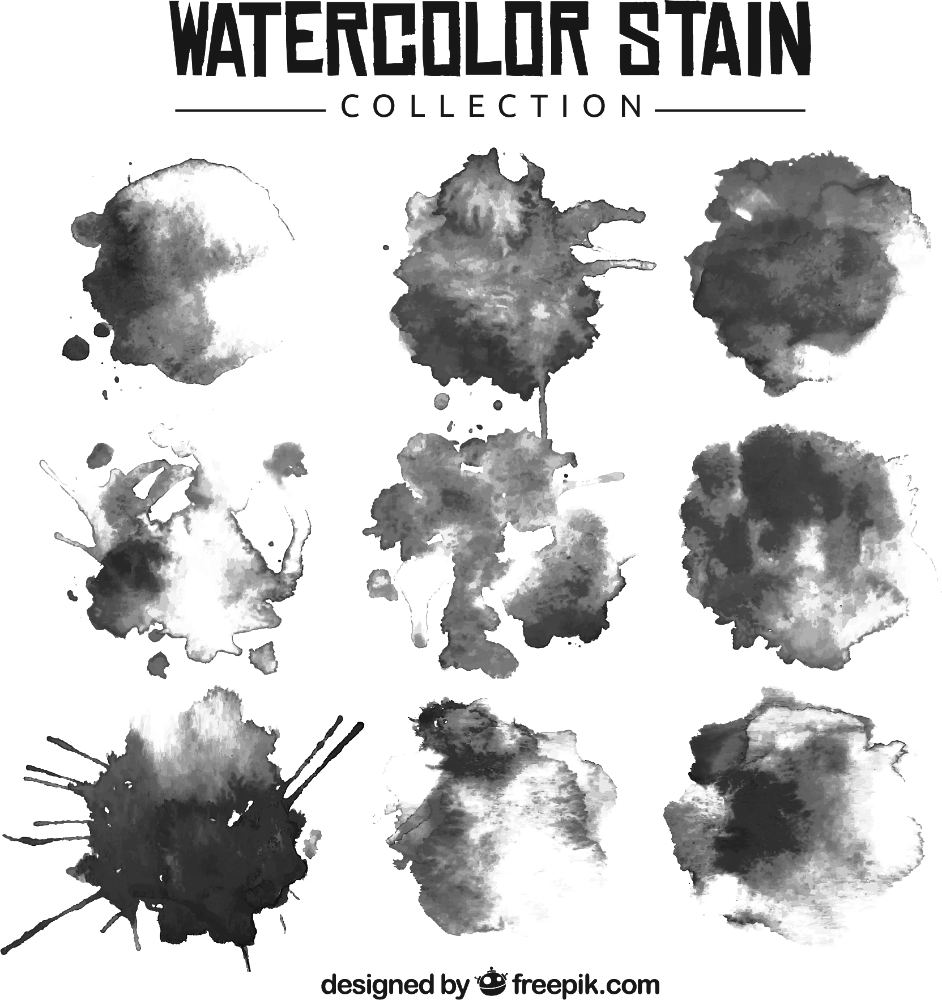

수살귀

이름
수살귀
지역
불특정
죽음
익사
목적
자신을 대체할 희생양 찾기, 외로움에 친구 찾기
위험도
★★★★★
능력치
특성 및 스토리
몸에서 물 떨어짐, 긴머리, 물비린내, 한기. 활동범위-물을 벗어날 수 없음. 비나 홍수로 인해 활동범위가 늘어날 수 있음.
익사시키는 방법은 크게 3가지로 회오리를 일으키거나 발을 잡아 물 안에 가두는 방법, 햇빛으로 수면을 반짝여 유혹하는 방법, 흐리거나 비오는 날 울음소리를 이용해 홀리는 방법이 있다.